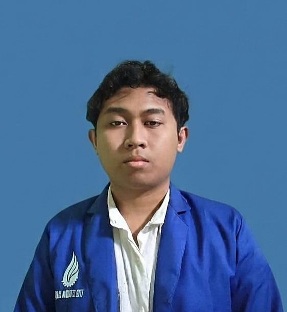

Mahasiswa Program Studi Sistem Komputer yang antusias mengeksplorasi integrasi perangkat keras (hardware), Internet of Things (IoT), sistem tertanam (embedded systems), dan Cloud Computing.

Program Studi
Sistem Komputer
Minat Utama
Cloud & IoT
Informasi pribadi dan latar belakang akademik.
Saya adalah mahasiswa aktif Program Studi Sistem Komputer yang memiliki ketertarikan mendalam pada teknologi perangkat keras dan komputasi awan. Berkomitmen untuk terus belajar mengembangkan solusi teknologi yang efisien dan andal.
Program Studi
Sistem Komputer
Domisili
Bali, Indonesia
Minat Utama
Cloud & IoT
Mendalami sistem tertanam, arsitektur komputer, jaringan, dan komputasi awan (Cloud Computing).
Catatan dan ringkasan materi perkuliahan Cloud Computing dari pertemuan ke pertemuan.
Cloud Computing merupakan teknologi yang memungkinkan pengguna menyimpan dan menjalankan aplikasi melalui internet tanpa harus memiliki server sendiri. Teknologi ini memudahkan pengguna mengakses data kapan saja dan dari berbagai perangkat[cite: 1].
Cloud Computing memiliki tiga jenis layanan, yaitu IaaS, PaaS, dan SaaS. Contohnya AWS, Google App Engine, dan Google Docs. Kekurangnya antara lain bergantung pada internet, risiko kebocoran data, gangguan server, dan biaya berlangganan[cite: 1].
SaaS (Software as a Service) merupakan layanan aplikasi yang bisa digunakan secara online tanpa perlu melakukan instalasi dan mengelola server sendiri. Contohnya Google Docs, Gmail, Canva, dan Microsoft 365[cite: 1].
Pada pertemuan ini dibahas contoh penggunaan SaaS di berbagai bidang, seperti SiteMinder untuk pengelolaan hotel dan industri perhotelan[cite: 1].
IaaS (Infrastructure as a Service) merupakan layanan yang menyediakan infrastruktur komputer melalui internet, mencakup sumber daya server virtual dasar[cite: 1].
Pada pertemuan ini dibahas contoh layanan IaaS, seperti Amazon EC2, Azure Virtual Machines, dan Google Compute Engine yang mendukung skalabilitas komputasi[cite: 1].
Bidang dan perangkat yang saya pelajari dalam studi Sistem Komputer.
Arduino, ESP32 & Sensor
Otomasi & Monitoring
IaaS, PaaS & SaaS
HTML, CSS & Tailwind
Silakan kirim pesan jika ingin berdiskusi seputar Sistem Komputer, Cloud Computing, atau kolaborasi teknologi lainnya.